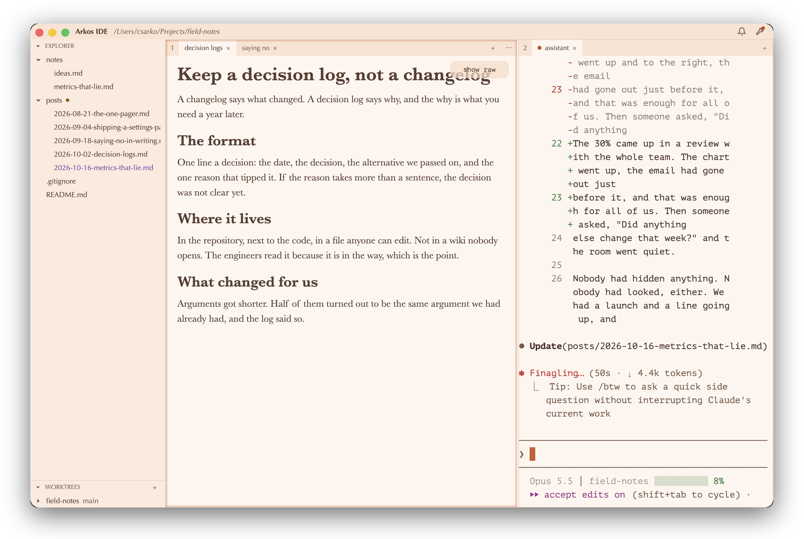
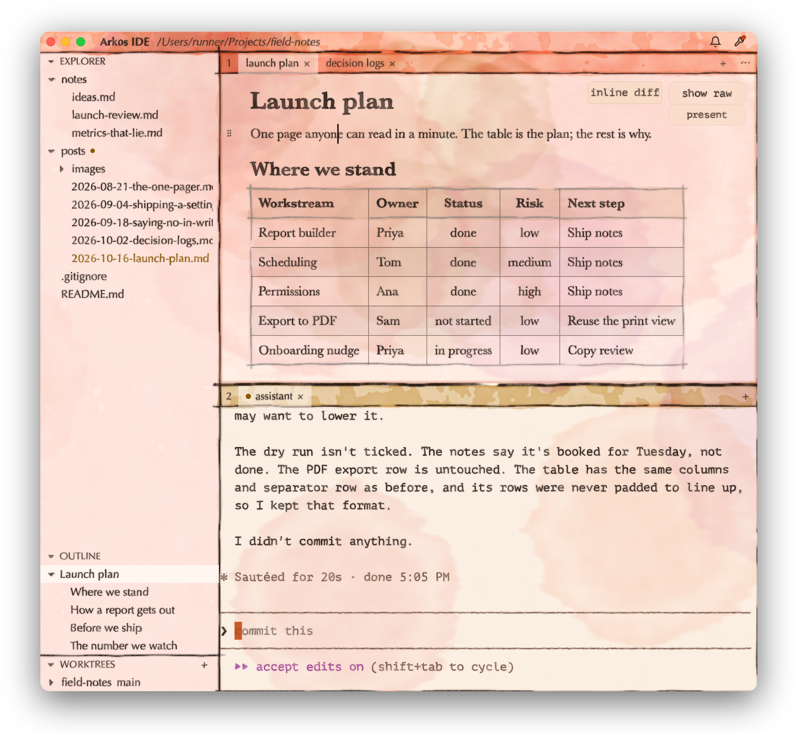

Both frames come from scripts/shoot.sh (main at 924b5b9): the launch plan rendered in the editor, Claude Code updating it from the review note in the other pane. Click a frame to open it full size.

